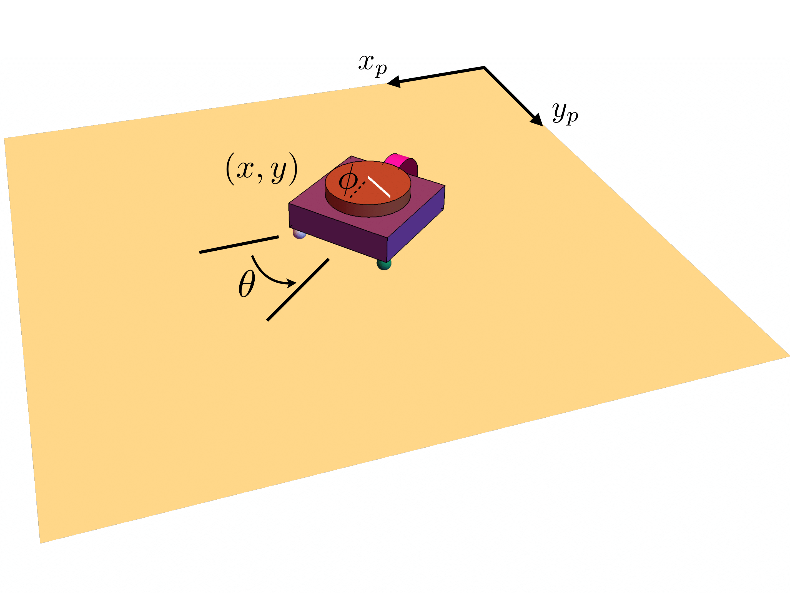

I graduated cum laude from the University of North Carolina at Charlotte in 2018 where I earned a BS in Mechanical Engineering and Engineering Science. My research efforts there took place throughout my final two years, during which I was advised by Professor Scott D. Kelly. I then went on to graduate with a MS in robotics in 2020 from Carnegie Mellon University's Robotics Institute. I was associated with the Biorobotics lab and was co-advised by Professors Howie Choset and Matthew Travers, with Professor Kelly also closely involved with my research. My focus was primarily on studying, developing models for, and building multi-agent systems of underactuated robots rooted in nonholonomic mechanics. While I have been particularly interested in robots whose locomotion embodies that of biological agents which move on compliant substrates or in fluid environments, see Geometric Mechanics: The Dynamics and Control of Multi-robot Systems in Ambient Media, my current research interests span a variety of topics. I have also more recently begun thinking about broader applications in robotics, exploring questions such as, how can we harness the technologies introduced by Large Language Models (LLMs) and Vision Language Models (VLMs) to improve the robots we might deploy in the real world? I am also a large proponent of simulation in robotics, and think that high-fidelity virtual environments can significantly accelerate the development and testing of robotic systems.
Reinforcement Learning and Interstellar's TARS Robot in MuJoCo
TARS, from Christopher Nolan's Interstellar, is a rectangular-prismatic robot whose locomotion emerges from the rotation of rigid rectangular links about shared edges, a kinematic structure with few analogs in the robotics literature. This project investigates whether locomotion policies can be learned for a TARS-inspired robot using model-free deep reinforcement learning.
I authored USD and MJCF models of a simplified TARS-like robot and trained locomotion policies using MuJoCo Playground, evaluating the effect of algorithm choice and reward parameterization on the structure and stability of the resulting gaits. This project is ongoing! See the GitHub page for details.
GraphEQA: Using 3D Semantic Scene Graphs for Real-time Embodied Question Answering (2024 - 2025)
Left panel: Robot equipped with GraphEQA, an approach that utilizes real-time 3D metric-semantic scene graphs (3DSGs) and task relevant images as multi-modal memory for grounding Vision-Language Models (VLMs) to perform EQA tasks in unseen environments. The robot uses GraphEQA to navigate a home while planning and mapping the environment in real-time; captured via an externally mounted camera.
Right panel: Metric-semantic 3D mesh and scene graph construction from Hydra. TSDF-based 2D occupancy map where white nodes represent explored areas, red nodes are obstacles, blue nodes are clustered frontiers. Green node shows the target location chosen by the planner.
Right panel inset: Video feed from the robot head camera.
Mechanics and Control of Coupled Interactions in Ambient Media (2018 - 2021)
Mechanical systems exhibiting nonholonomic constraints can often be of utility in the study of locomotion and coupled group behaviors for biological systems. Many multi-agent systems in nature, for example, are comprised of agents that interact with, and respond to, the dynamics of their environment. In a recent paper, we approached the study of such agent-environment interactions through the study of passively compliant vehicles coupled to their environment via simple nonholonomic constraints. The Chaplygin beanie is a simple underactuated mechanical system that locomotes when its rotor rotates relative to its body. An example of the Chaplygin beanie is shown below. Supported by two frictionless casters at the front and a torsional spring coupling the rotor to the cart, a nonzero displacement in the spring induces locomotion.

The Chaplygin beanie is shown sitting atop a passive platform capable of translational motion. In our recent paper published in the ASME 2020 Dynamic Systems and Control Conference (1), we prove that all initial conditions corresponding to zero net momentum of this mechanical system will result in stable forward motion of the Chaplygin beanie. In particular, when its rotor is wound up arbitrarily, the behavior in the following video is exhibited.
The paper referenced above also explores control of the platform, termed exogenous control, and the resulting locomotion of a passive Chaplygin beanie. Much of the work in this paper also contributed to my Master's thesis, which you can download here.
Upon the addition of another Chaplygin beanie to the platform, so that the system now contains two agents within the medium, rich behaviors emerge in simulation. If both agents are equipped with some elasticity in their body and wound up arbitrarily, the two agents will locomote in the same direction independent of either of their orientations and due purely to the dynamics induced by the actuated agent through the medium.
The first of these two videos shows two Chaplygin beanies on an immovable platform with some initial conditions. Ultimately, they locomote in different directions. The second video shows two Chaplygin beanies on a movable platform with the same initial conditions as the previous experiment. Proving the entrainment phenomenon exhibited in this second video is one of the problems I am currently working on.
Mechanical Communication Through Ambient Media (2020 - 2021)
Mechanical coupling between agents through ambient media can also be viewed as a mechanism for communication. Communication through some physical media has been termed mechanical communication and has been shown to be exhibited at the cellular level (see this). This particular form of communication is distinct in that information flows through a medium possessing dynamics of its own, encoding quantities possibly describing an individual agent's behavioral states, disturbances in the surrounding medium, and overall group behavioral states. My previous work began to lay a theoretical foundation for investigating mechanical communication from a perspective of robotics and applied mathematics. My current work involves further establishing the concept of mechanical communication within multi-agent systems in ambient media and determining how it can be exploited for decision-making and control of collections of agents within these systems. More on this work as it develops.
Snake Robot Locomotion (2017 - 2019)
The constraints on a snake as it slithers along the ground can also be modeled as nonholonomic constraints on a series of wheels on a series of articulated linkages. The role of compliance in biological systems is ubiquitous. Fish and snakes have flexible bodies, and humans have muscles and tendons which are compliant. In (2), we investigate the locomotion of a multi-link nonholonomic snake robot and experimentally validate its locomotion under amplitude and frequency variations in sinusoidal actuation of its foremost joint. The remaining joints are passively compliant via linear springs. A robot of such a system is shown below.

And here is a video of that robot undergoing a prescribed amplitude modulation to locomote around an object in its environment.
Robots like this one help us to describe the locomotion of biological systems. I hope to develop more of these kinds of robots in some of my future work with multi-agent systems in ambient media to gain some fundamental insight into how such media contributes to the coordinated efforts of organisms like fish and even cells.